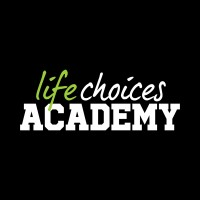

My Learning Journey
Where It All Began
My journey into software development began when I started learning Delphi in High School. I was fascinated by the ability to create software and solve problems through coding. I would watch my IT teacher fixing our errors like its nothing big and I wanted to be able to do that too. This early exposure sparked my interest in programming and set me on the path to becoming a software developer.

Where I Am Now
As I progressed, I expanded my knowledge by becoming a trainee software developer at Life Choices Academy where I'm currently learning Python, HTML, CSS, and JavaScript. As I continue to learn, I am gaining experience in creating projects, debugging code, and applying programming concepts in every exercise and assignment we have been given so far.
Through practice and projects, I developed and strengthened my confidence in coding and solving problems independently.